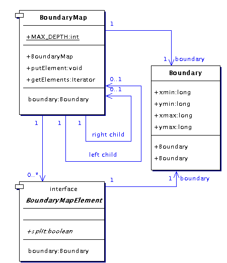
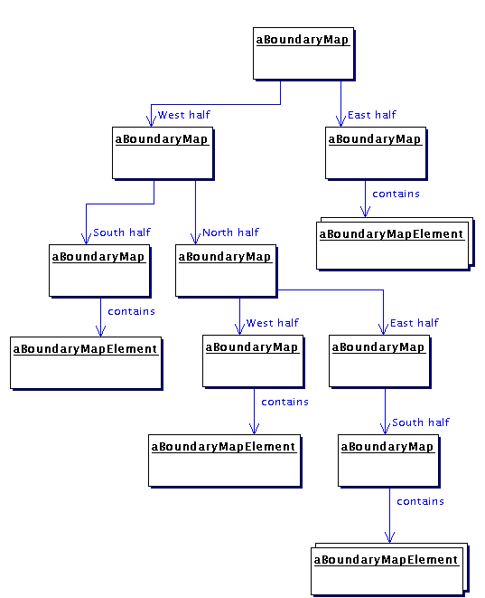
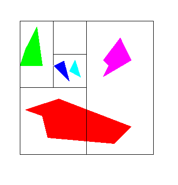

VGLViewer

Implementation
boundaryMap |
Overview|
A BoundaryMap stores BoundaryMapElements and allows fast retrieval of those which intersect a given Boundary.
|
|
BoundaryMapElement defines the contract for an element that can be stored and retrieved, where the element is required to
|
- provide a Boundary which encloses it's geometry, and
- optionally be able to split itself into two lists of fragment BoundaryListElements that lie on either side of a line on the X or Y axis.
|
Implementation|
BoundaryMap is actually a binary hierarchy implemented using the Composite pattern, as shown in this class diagram:
|

Figure 1. BoundaryMap classes
|
The creation of a BoundaryMap is described as follows. A root BoundaryMap is instantiated, then BoundaryMapElements are added to it individually with method putElement. Each BoundaryMap has a Boundary which starts out as inside-out. As each BoundaryMapElement is added to the root BoundaryMap, it is temporarily stored by the root, and the root's Boundary is expanded to enclose the BoundaryMapElement's Boundary. When all BoundaryMapElements are added to the root, the root's Boundary will enclose all of them.
|
|
Generation of the hierarchy is lazy: the first time we subsequently call getElements on the root BoundaryMap to get BoundaryMapElements intersecting a given Boundary, the root builds a binary sub-hierarchy of BoundaryMaps. The root does this by iterating through the temporarily-stored BoundaryMapElements and inserting then into itself.
|
|
The pseudocode in the next section describes the insert operation.
|
Algorithm|
We start with the BoundaryMap root by calling, for each BoundaryMapElement element temporarily stored at it, the pseudo code INSERT(element, root, 0) operation. The last argument, for parameter axis, has a value of 0 to specify the X-axis.
|
INSERT(element : BoundaryMapElement, map : BoundaryMap, axis : INTEGER)
BEGIN
VAR
a, b : Boundary
1. IF element does not intersect map's boundary THEN RETURN
2. IF (axis = 0) THEN
2.1 set a andb to each half of map's boundary, split on X-axis
ELSE
2.2 set a and b to each half of map's boundary split on Y-axis
3. IF element fits inside a THEN
3.1 IF left child of map does not yet exist THEN
3.1.1 create new left child of map, with boundary a
3.2 CALL INSERT(element, left child, (axis+1) MOD 1) /* alternate axis */
3.2.1 RETURN
4. IF element fits inside b THEN
4.1 IF right child of map does not yet exist THEN
4.1.1 create new right child of map, with boundary b
4.2 CALL INSERT(element, right child, (axis+1) MOD 1) /* alternate axis */
4.2.1 RETURN
5. IF element is able to split itself THEN
5.1 Split element about dividing line between a and b, yeilding lists leftFragments and rightFragments
5.2 IF left child of map does not yet exist THEN
5.2.1 create new left child of map, with boundary a
5.3 WITH EACH leftElement in leftElements DO
5.3.1 CALL INSERT(leftElement, left child, (axis+1) MOD 1) /* alternate axis */
5.4 IF right child of map does not yet exist THEN
5.4.1 create new right child of map, with boundary b
5.5 WITH EACH rightElement in rightElements DO
5.5.1 CALL INSERT(rightElement, right child, (axis+1) MOD 1) /* alternate axis */
6. ELSE store element in map
6.1 RETURN
END.
|
|
Points to note about this algorithm are:
|
- There is a limit to how deep the bounding hiararchy is allowed to be. If we try to insert element into map when map is at the maximum allowable depth in the hierarchy, then map will not attempt to store element in a child, instead map will store element in itself and INSERT will return. This is omitted from the pseudocode for clarity.
- The axis alternates between 0 and 1, to ensure that the root BoundaryMap's Boundary is halved on the X-axis, then it's children's Boundaries are halved on the Y-axis, then in turn, their children's Boundaries are halved on the X-axis, and so on.
- The recursion base case at Step 1 cannot result in no BoundaryMapElements ever being inserted into any BoundaryMap because if map is the root, then it has a Boundary that has been expanded to enclose currentElement (so for the root this base condition would never be true).
-
Now we have a binary boundary hierarchy that has at worst, for most elements, a time complexity in the order of log(N) for finding intersectors of a given Boundary.
|
A Pathalogical Use Case|
One pathalogical case for the above algorithm is when an element that is not able to split itself is right on the dividing line between a BoundaryMap's Boundary (Step 5 of the algorithm above), where it fits inside neither child Boundary a nor b. In this case, map has no choice but to put store element within itself, even though it may be small enough to fit in a or b.
|
A Constraint on Use| This algorithm is intended for use when BoundaryMapElements are static, ie. not animated. A BoundaryMap would have to reconstruct the bounding hierarchy each time any BoundaryMapElement is moved or resized, which would not be efficient.
|
An Example BoundaryMap|
The instance diagram below shows an example BoundaryMap, containing five polygons. Note how the root has children representing its East and West half-spaces. The West child has children representing its North and South half-spaces, and so on.
|

Figure 2. Example Instance of a BoundaryMap
|
Here is a graphical view of the spatial divisions made by this example. Since the BoundaryMapElement implementation for the red polygon implemented the split operation, the red polygon element was able to be bisected into two fragments that could be stored in different BoundaryMap leaf nodes.
|

Figure 3. Layout of Example BoundaryMap
|